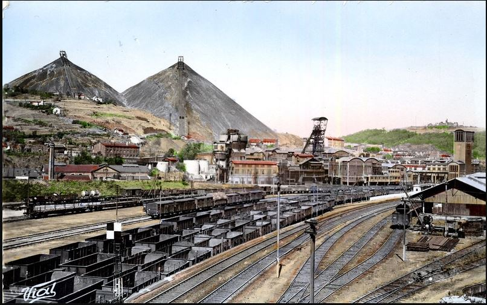

En 1821 une ordonnance royale autorisa la construction d’un nouvel hôtel de ville le long de la rue de Roanne sur la place Monsieur (actuelle place de l'Hôtel-de-ville). L'édifice fut conçu par les architectes Pierre-Antoine Dalgabio et son neveu Jean-Michel Dalgabio.
La mairie ne fut pas épargnée par les incendies, l'un en 1933 et surtout un autre en 1952 qui endommagea le dôme et entraîna sa démolition. Dans les années 1970, la démolition de la mairie est envisagée mais le projet est abandonné après un référendum local.
Et la réponse de la question précédente est :
c) du tour de la Terre, soit 40 000 km.
Depuis 2015, plus de 45 millions de trajets sont annuellement réalisés par les voyageurs grâce à l’ensemble du réseau de la STAS. La STAS est aussi responsable du réseau de vélos en location Vélivert.

Une petite question pour la route,
Les tramways de la STAS, ou Société de transport de l’agglomération stéphanoise, parcourent chaque semaine l’équivalent :Auparavant, la place de l’Hôtel de Ville accueillait de manière permanente :
a) une fête foraine
b) un pédiluve géant
c) un parking
Votre prochaine étape est un musée très connu dans la ville dont l'objet est une des activités historique stéphanoise.
information itinéraire